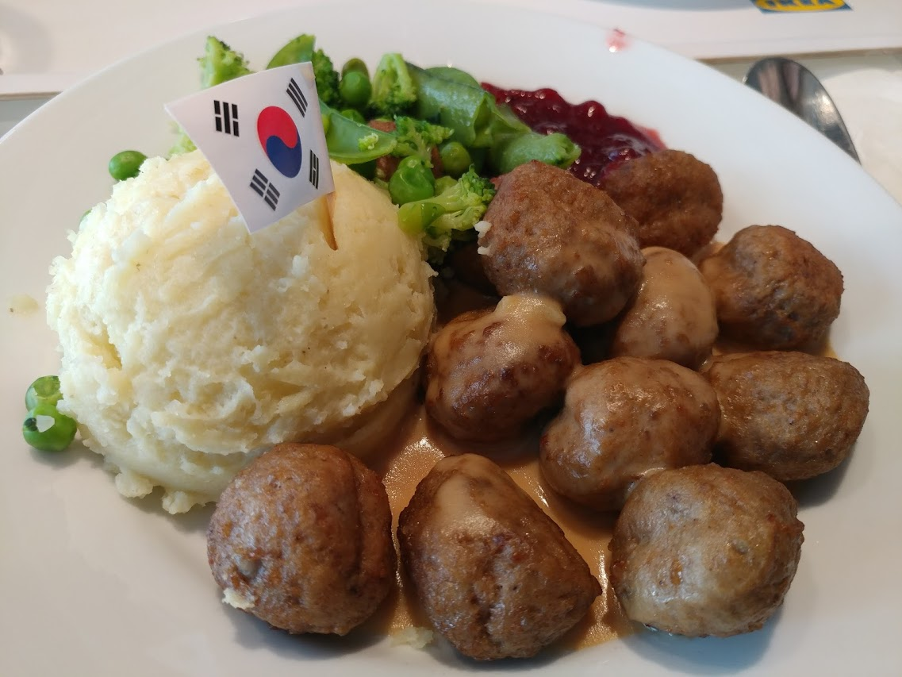
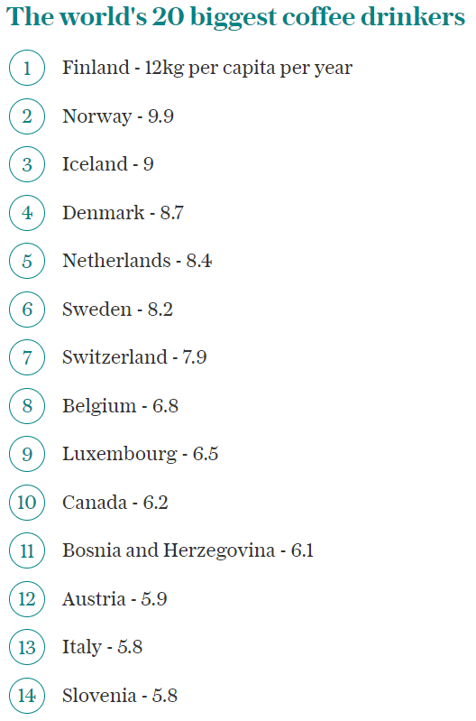
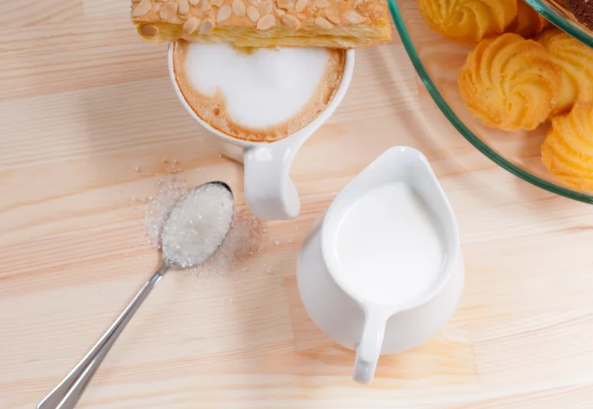
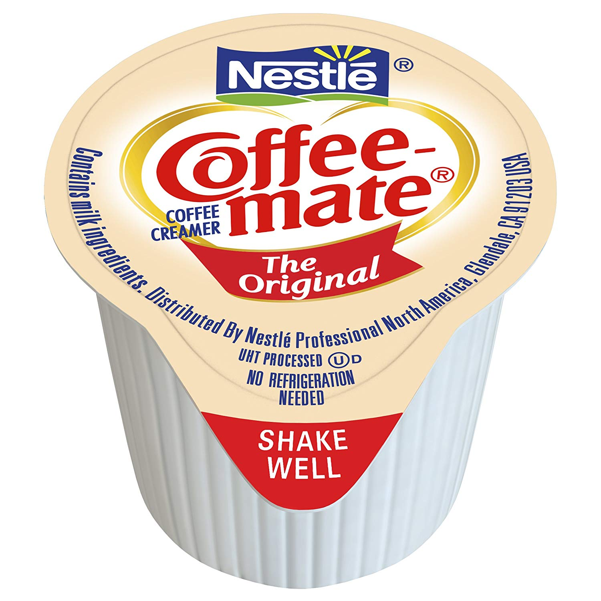
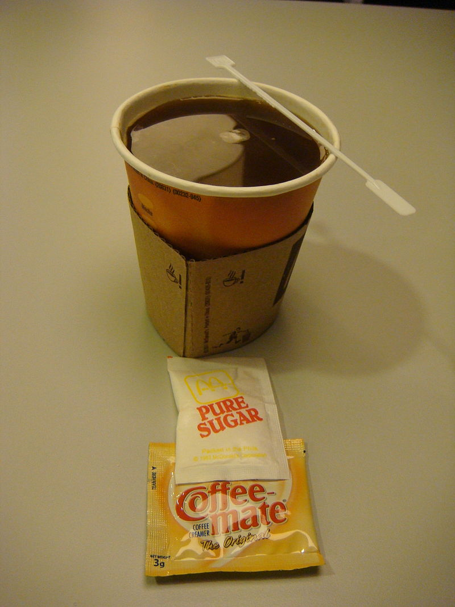

구미에서도 커피에 프림을 넣을까 ? - Clouds in my coffee
게시: 2020-02-06T06:30:01+09:00
최근에 TV에서 '거미줄에 걸린 소녀'(The Girl in the Spider's Web)라는 영화를 봤습니다. 우리나라에서는 '밀레니엄' 시리즈로 잘 알려진 스웨덴 작가 스티그 라르손(Stieg Larsson)의 소설 시리즈 중 제2권을 각색한 영화였는데, 사실 이 영화는 제1권을 각색한 2011년 영화 '밀레니엄: 여자를 증오한 남자들'(The Girl with the Dragon Tattoo)에서 출연진이 싹 다 바뀌어서 몰입감이 크게 떨어졌습니다. '밀레니엄: 여자를 증오한 남자들'에서는 루니 마라가 '리스베트' 역을, 다니엘 크레이그가 '미카엘' 역을 맡았는데, 이 '거미줄에 걸린 소녀'에서는 제게는 무명이나 다름없는 배우들이 리스베트와 미카엘을 맡았거든요. 뿐만 아니라 줄거리도 원작 소설에 크게 벗어났습니다. 그래서인지 제작비 9천만 달러를 들여서 2억3천2백만 달러를 벌어들인 '밀레니엄'과는 달리, 이 '거미줄'은 제작비 4천3백만 달러에도 못 미치는 매출을 올렸습니다. 쫄딱 망한 거지요.
저는 그래도 이 '거미줄' 영화를 나름 흥미있게 잘 봤습니다. 스웨덴을 배경으로 한 영화는 드물쟎아요. 저처럼 여행은 가고 싶지만 시간과 비용 문제 때문에 자주 못 다니는 사람은 책과 영화를 통해서라도 색다른 나라를 경험하면 좋습니다. '밀레니엄'에서도 그랬지만 이 '거미줄'에서도 추운 날씨와 함께 눈에 확 띄는 스웨덴의 특색이 있었습니다. 사람들이 먹는 장면이 별로 없더라고요. 제가 너무 선입견을 가지고 봐서 그런지 모르겠습니다만, 스웨덴도 음식은 영국 못지 않게 꽝인 모양이구나 하는 느낌을 받았습니다.

(스웨덴 요리 중 최고봉을 맛보고 싶으시면 이케아에 가셔서 미트볼을 드시면 된다고 합니다. 싸고 맛있는데, 뭐 특별하진 않고 그냥 짐작하시는 그 맛입니다.)
2017년자 영국 텔레그라프지에서 발표한 1인당 커피 소비량이 가장 많은 나라 중에서 스웨덴은 6위를 차지할 정도로 커피를 많이 마시는 나라입니다. 이 리스트를 보면 대개 북구의 추운 나라에서 커피를 많이 마시더라고요. 이탈리아가 고작 13위이고 미국은 아예 20위 안에 들지도 못합니다. 가만 보면 추운 나라일 수록 음식이 별로 맛이 없고 대신 커피만 많이 들이키는 것 같습니다.

(아마 우연이겠지만) 그래서인지 이 영화에서도 음식 관련 장면은 거의 나오지 않지만 커피 마시는 장면은 하나 나옵니다. 미국 NSA 요원인 에드윈이 리스베트의 조력자인 뚱보 스웨덴 해커 플레이그와 대화를 나누는 장면입니다. 에드윈: 이봐, 크리머(creamer) 좀 있나 ? 플레이그: (차갑게) 아니, 없어. 에드원: 알았어 플레이그: 그거 만지지마. 그거 빈티지 물건이라고. 에드윈: 그래, 음. 그게 언제였더라, 2002년이든가 ? 빅 파마를 이 멋진 물건으로 해킹했어. 플레이그: 킹 파마 해킹은 모델 7792에서 수행됐는데. 에드윈: 실제로는 내가 그걸 한 것은 7770에서였어. 하지만 뭐 누가 그런 걸 세고 있겠어 ? 플레이그: (놀라서 돌아보며) 네가 워차일드(Warchild)야 ? 그 워차일드 ? 에드윈: 응. 잠시 그렇게 활동했어. NSA가 돈을 훨씬 많이 주더라구. 우라지게 훨씬 더 많이. 플레이그: (1회용 크리머가 잔뜩 담긴 바구니를 내밀며) 크리머 넣을래 ? 에드윈: 아놔... (Oh boy) 여러분은 커피를 어떻게 드십니까 ? 여전히 커피 믹스를 많이들 드시니 커피에는 설탕과 프림을 넣어서 드시는 분들이 많을 것입니다. 저도 설탕과 프림을 좋아하긴 합니다만, 그렇게 설탕과 프림을 많이 먹으면 체중 조절에 곤란해서 저는 가능하면 블랙으로 마십니다. 요즘은 별다방 콩다방 같은 곳에서 카페 라떼나 카페 모카 같은 것을 드시는 경우도 많을텐데, 그러다보니 커피에 설탕과 프림을 넣으면 마치 구시대 사람처럼 느껴지기도 하고 어딘지 모르게 좀 촌티가 나는 것처럼 느껴지기도 합니다. 그렇게 설탕과 특히 '프림'을 약간 촌스럽게 느끼던 와중에 저렇게 (왠지 세련스럽게 보이는) 스웨덴 배경의 영화에서 '프림'이 나오니까 굉장히 반갑더라구요. 다들 아시겠지만 '프림'은 프리마라는 상표명에서 나온 한국식 표현이고, 영어로는 저 영화 대사에 나온 것처럼 크리머(creamer) 또는 커피 화이트너(coffee whitener)라고 합니다. 하지만 미국인들은 커피에 가루로 된 크리머를 넣는 경우보다 뭔가 흰 액상 크림 같은 것을 넣으면서 '밀크' 또는 '크림'을 넣는다고 말하는 경우가 더 많습니다. 과연 이들이 넣은 것은 우유일까요 크림일까요 ?
대부분의 경우 우유도 크림도 아닙니다. 원래 젖소에서 우유를 짜서 그대로 두면 위에 지방층이 뜨는데, 그게 크림입니다. 그러나 그런 크림은 맛과 향이 너무 진해서 커피 맛을 아예 덮어버리게 되므로, 커피 본연의 맛을 느끼지 못하게 됩니다. 여담이지만, 그래서 커피 원두 자체가 괜찮은 곳에서는 에스프레소나 아메리카노를 마시는 것이 좋고, 커피 원두 자체가 별로인 곳에서는 라떼나 모카처럼 우유나 크림이 잔뜩 든 단 것을 마시는 것이 좋습니다. 실제로 경험 많은 커피 전문점에서는 에스프레소용 원두와 라떼/모카용 원두를 따로 준비해둔다고 합니다. 라뗴나 모카는 우유와 크림의 맛 때문에 커피 맛이 가려지니까, 커피 맛을 강하게 하려고 원두를 아주 많이 볶아서 태우다시피 해야 한다고 하더라고요. 그런데 어차피 그렇게 태울 거라면 굳이 비싸고 신선한 원두를 쓸 필요가 없는 것이지요.

그래서 결국 커피 원두 자체의 맛을 즐기려면 크림을 넣어서는 안됩니다. 그러나 우유는 또 좀 밍밍한 편이지요. 그래서 미국인들이 만든 것이 '하프 앤 하프'(half and half)입니다. 즉 우유 반 크림 반을 섞은 것입니다. 맛은 그냥 우유와 크림을 반씩 섞은 맛입니다. 그리고 미국인들이 커피에 넣는 밀크 또는 크림이라는 것도 실은 대개 '하프 앤 하프'입니다. 이게 없는 경우엔 그냥 밀크를 넣기도 하지만 진짜 크림을 넣는 경우는 거의 없답니다. 하지만 하프 앤 하프는 냉장 보관해야 하니까 귀찮지요. 그걸 냉장하지 않고도 오래 보관하기 위해 만든 것이 가루로 된 크리머입니다. 가루로 된 크리머의 주성분은 전에 우리나라 양대 커피믹스 제품 간에 벌어진 광고 대전에서 공격 대상이 되었던 카세인나트륨(sodium caseinate)인데, 이것도 사실 우유 파생물로 만든 것이고 꼭 몸에 해로운 것은 아닙니다. (우유와 크림 자체도 많이 먹으면 건강에 좋지는 않습니다.) 특히 카세인나트륨에는 젖당(lactose)이 없기 때문에, 젖당 소화 능력이 없어서 우유를 못마시는 사람들에게는 고마운 크리머입니다. 그리고 카세인나트륨 기반의 non-dairy 크리머도 액상도 있습니다. 커피 전문점에서 내놓는 1회분량의 작은 pod에 담아놓은 액상 크리머가 바로 그것입니다. 미국인들도 가루로 된 것이건 액상으로 된 것이건 카이센나트륨 기반의 non-dairy 크리머를 꽤 많이 소비한다고 합니다.



오늘 글은 아주 예전 노래인 칼리 사이먼(Carly Simon)의 "You're So Vain" (허세 뿐인 당신)이라는 노래 중 한 구절을 인용하면서 끝냅니다. But you gave away the things you loved And one of them was me I had some dreams, they were clouds in my coffee Clouds in my coffee 하지만 당신은 사랑하던 것들을 내버렸고 그 중 하나가 나더군요 내겐 꿈들이 있었는데, 그것들은 커피 속의 구름에 불과했어요 커피 속의 구름이요 여기서 '커피 속의 구름'이라는 것이 대체 무엇이냐에 대해서는 해설이 분분했습니다만, 자신의 꿈이 허무하게 사라지는 것을 커피 위에 넣은 '크리머'가 커피 속에 풀리면서 사라지는 것에 비유한 것이라는 설명을 제가 어릴 때 어느 DJ가 라디오에서 설명했던 것을 들은 기억이 납니다. 그러나 실은 칼리 사이먼이 그 가사를 지은 것은 자신의 친구이자 피아노 연주자인 빌리와 함께 비행기를 탔을 때, 빌리가 자신의 커피잔 속에 창 밖의 구름이 비치는 것을 보고 '커피 속의 구름 좀 봐봐'라고 말한 것에서 따온 것이라고 어느 언론과의 인터뷰에서 밝혔습니다. 제게는 DJ의 설명이 더 마음에 드네요. 부둣가에서 피아노를 치며 라이브로 공연하는 칼리 사이먼의 멋진 노래 "You're So Vain"은 아래에서 감상하세요. 전성기 칼리 사이먼의 청명한 목소리가 정말 매력적입니다. https://youtu.be/mQZmCJUSC6g
Source : https://www.thespruceeats.com/what-is-coffee-cream-765019 https://www.urbandictionary.com/define.php?term=Clouds%20in%20my%20coffee https://en.wikipedia.org/wiki/Clouds_in_My_Coffee https://en.wikipedia.org/wiki/Espresso_con_panna https://www.thespruceeats.com/what-is-half-and-half-995712 https://www.springfieldspringfield.co.uk/movie_script.php?movie=the-girl-in-the-spiders-web https://www.telegraph.co.uk/travel/maps-and-graphics/countries-that-drink-the-most-coffee/ https://en.wikipedia.org/wiki/Casein https://en.wikipedia.org/wiki/Non-dairy_creamer https://en.wikipedia.org/wiki/You%27re_So_Vain